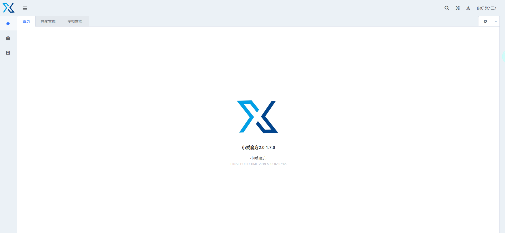
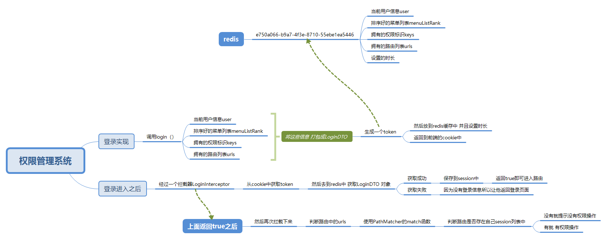

-
- Basic info. 基本信息
- 个人信息: 李云龙 / 男
- 毕业院校: 河源职业技术学院
- 工作年限: 一年
- 常用ID: yunlongn
- 博客: www.ityouknow.cn
- GitHub: www.github.com/yunlong
-
- Experience. 项目与工作经验
河源市河源通智能卡有限公司（2018.12 - 2019.05）
-
小爱物业管理系统
以物业管理系统的后台为主要开发工作，项目采用 SpringBoot 的基础框架，使用 SpringMVC、Spring、Mybatis-plus进行物业系统的Crud操作
权限管理是使用拦截器为基础自己搭建的RBAC权限管理框架。
使用到了activeMq做物业的每月物业费报表统计 （报表统计负责计算每月物业费 + 公摊费用）
使用了XXL-JOB 做每月物业费报表的任务调度
使用了jenkins 来做系统的自动化部署
 -
商业项目
负责部分丁香园商业项目的开发维护，商业项目作为丁香园最大的营收来源，为药企提供营销、数据服务和信息技术服务
商业项目使用 webpack 和 postcss 构建，兼容 IE8
个人项目
-
基于SpringCloud的微服务商城 - 聚合支付平台
聚合支付平台，集成微信封装成服务，提供给内部其他子系统进行调用， 为了保证支付接口的安全性， 使用令牌+验签+加密防止数据被篡改， 使用LCN框架实战解决SpringCloud微服务中分布式事物问题
该项目架构采用分布式微服务架构，分为众多子系统，有会员、SSO、订单、商品、支付、消息、微信、H5和PC、移动端、优惠券、后台系统、任务调度等模块。
公司使用 SpringBoot，SpringCloud作为微服务RPC远程调用框架
1、使用Eureka 作为注册中心
2、Feign 客户端调用工具 解决服务雪崩效
3、使用 Rebbon 实现服务负载均衡，
4、服务降级使用断路器 Hystrix 、
5、使用 Zuul 搭建接口网关、
6、视图展示使用 Freemarker 、
7、数据库层使用 Mybatis-plus 框架、
8、缓存使用 Redis 、
9、数据库使用 MySQL ;
10、项目管理工具使用 Maven 、
11、版本控制工具使用 Git 、
12、消息中间件使用 ActiveMQ 、
13、分布式任务调度系统使用 XXLJOB 、
14、反向代理工具使用 Nginx ;
15、项目自动部署工具使用 Jenkins 。 -
基于SpringCloud的微服务商城-微信公众平台开发
SpringCloud的微服务商城，是基于微信平台流量作为入口导向。 整合微信开发接口，用户与该微信公众号进行关联绑定，实现用户快捷、方便、安全购物体验。 该项目采用微服务系统架构，分为微信服务接口和微信后台管理系统， 使用微信框架 weixin-java-tools, 使用外网映射工具 ngrok， 封装常用微信API接口 ， 消息管理、网页授权OAuth2.0、 素材管理、用户管理等封装成接口给其他子系统调用。
-
基于SpringCloud的微服务商城-消息中台服务项目
该项目是单独的一个服务和后台项目-消息服务系统， 集成了常用消息网关接口， 阿里云大于短信网关， 微信消息推送，邮件服务等。 封装成服务接口，提供给内部其他子系统进行调用， 服务接口支持同步和异步方式调用， 同步调用接口协议采用Http+JSON格式、 异步调用方式采用MQ+自定义报文格式。 使用分布式job每晚定时检查异常发送消息，如果发送异常，有消息补偿机制。
-
基于SpringCloud的微服务商城-会员中台项目
该项目是蚂蚁微信商城核心模块， 会员中台项目，会员中台项目分为， 会员服务接口和会员后台管理系统， 会员服务接口会话认证， 采用有效期token令牌方式， 进行验证， 实现登录支持整个系统的移动端、微信端、PC端、H5端来源请求。 来源调用注册服务接口，注册成功后，调用异步消息接口进行新用户提醒。。
-
RBAC权限管理系统
1、使用Redis缓存制缓存session对象。
2、项目中使用SpringMVC中的拦截器的方式拦截所有请求。判断登录用户的权限进行权限拦截
3、使用mongodb 做日志的存放。

-
- Skill. 技能清单
前端
-
HTML / CSS
能够编写语义化的 HTML，模块化的 CSS，完成较复杂的布局
熟悉 Less Sass 等CSS预处理和模块化工具
-
JavaScript
了解原生 Javascript
-
Vue.js
了解Vue生命周期、 双向绑定原理
能使用一些基本的Vue框架搭建后台管理系统。 例如 D2admin、 Vue-admin-element
后端
-
Java
1.熟练掌握JavaSE基础知识，熟悉多线程与并发编程，拥有丰富的系统设计分析能力及面向对象分析和设计能力，熟悉常用的设计模式；
2.熟练掌握Eclipse、svn、git、Maven、docker等开发及版本控制工具，熟练掌握Java基础技术Jsp、Servlet、Jdbc，熟练掌握Web应用系统开发，具备的独立开发能力；
5.熟练使用tomcat服务器，发布部署web项目，熟练使用反向代理服务器nginx、高可用keepalived；
6.熟悉使用MySQL、，熟悉Redis、MongoDb等非关系型数据库；
7.熟练运用Spring、Mybatis、Springboot等开源框架，熟悉Spring的IOC、DI、AOP设计思想；
8.了解SOA、微服务、大型网站架构，了解RPC远程调用、springcloud等微服务框架；
9.熟练使用网络通讯协议，熟练使用json、xml通讯格式，熟悉常见消息中间件ActiveMQ、RocketMQ、 使用；
10.熟悉restfull API开发规范，熟悉三方授权OAuth协议、对接支付接口，熟悉微信开发；
11.熟悉分布式协调工具Zookeeper、集群、高可用、高并发解决方案，熟悉分布式常见解决方案（如：分布式job幂等性、session共享、分布式锁、分布式事物等）；
12.熟悉junit单元测试
13.了解Web 安全与反攻，简单防止 DDOC、XSS、CSRF等；
其他属性
-
动漫、美剧爱好者
轻微强迫症，注意 阿里巴巴Java开发手册

李云龙的简历
System.out.print("hello word")
-
- Contact. 联系方式:
- 电话: 13539136450
- 邮箱: 763506525@qq.com
- QQ: 763506525
-
- Application. 应聘岗位
- Java 后端工程师
我是一个对Java和动漫由衷热爱、有趣的Java后端工程师。
热爱编程，喜欢新的事物，同时比较重视基础牢固；
能够适应比较快的工作节奏；
具有非常强的责任心，能够承担压力做事细心踏实勤奋，具有强烈的时间观念;
有比较强的动手能力，有很好的分析问题与解决问题的能力；
具有很强的团队精神和良好的合作意识！